Ecommerce Database Management System Project
E-commerce Database Management System (EDMS) That manage the operational data for an online shopping platform. To support analytical processing and business intelligence, a data warehouse will be created alongside OLAP (Online Analytical Processing) capabilities using a star schema. The project will also incorporate ETL (Extract, Transform, Load) processes using (SSIS), analytical cubes with (SSAS), and reporting with (SSRS).
Project include will be created ERD · Mapping · Online Transaction Processing (OLTP) · Data Cleaning · OLAP · Star Schema · Data Warehousing · SQL Server Integration Services (SSIS) · OLAP Cubes · SQL Server Analysis Services (SSAS) · SQL Server Reporting Services (SSRS)
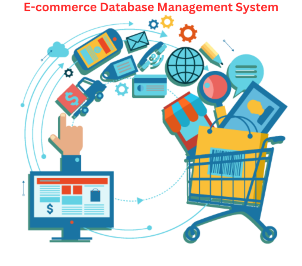
Covid 19 Analysis Project
The Object of this project is to analyze COVID-19 data using SQL to drive
insights into the spread of the virus, its impact on different regions, and
regions with highest Infected.Analysis Every region according to Date, Total cases, New cases, Total
deaths,New deaths, New vaccinations, Total vaccinations and Percentages of them all.

Customer Churn Analysis Project
In this project, I analyze telecom customer churn. This is essentially the rate at which customers leave a business compared to the total number of active customers. This is also known as the churn rate or customer attrition.
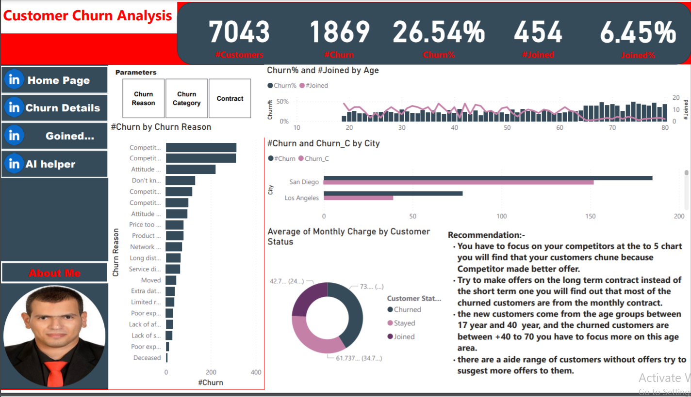
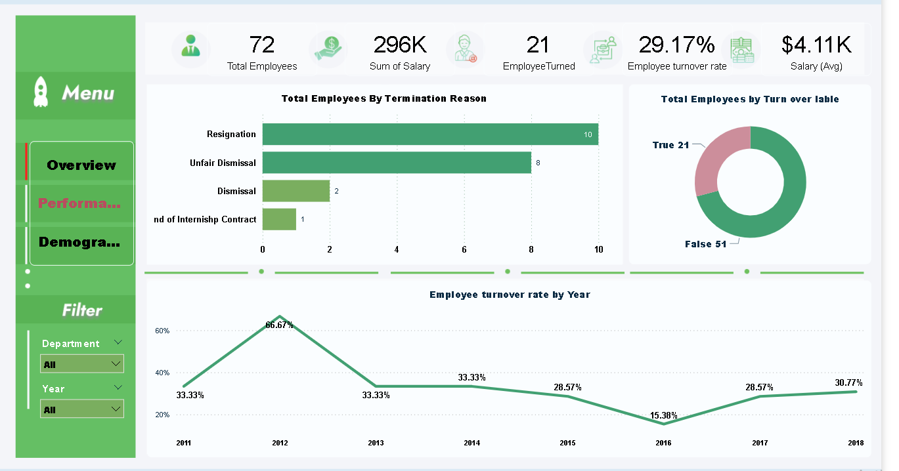
Restaurant Sales Analysis Project
This Report is designed to help restaurant managers understand sales performance across various dimensions, such as time, type, Category, Item, Income, Orders and daily trends. It enables data-driven decisions to optimize operations and enhance sales strategies.
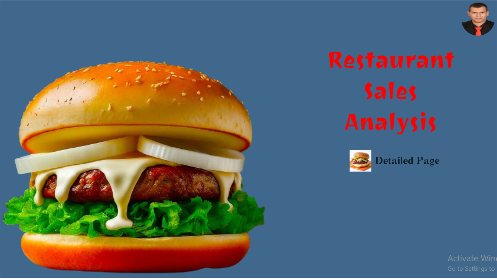
Top 50 USA Tech Companies Analysis Project
The goal is to provide a comprehensive analysis of the top 50 technology companies in the United States using Power BI in terms of Market cap,annual Revenue,Number of Employee by company and states and Annual Income Tax.
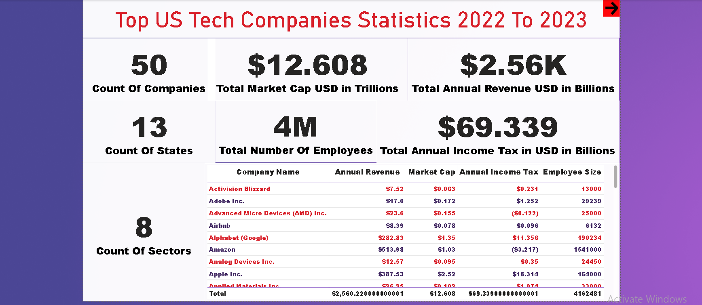
SuperMarket Sales Analysis Project
The primary objective of this project is to analyze supermarket sales data to uncover insights and trends that can help in making informed business decisions. The analysis focuses on sales performance, customer behavior, product preferences, and identifying areas for improvement.
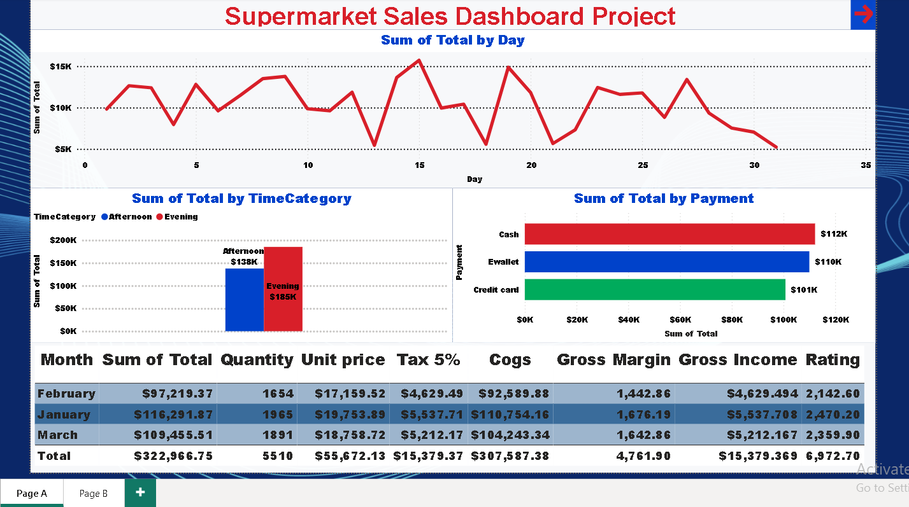
Top Paid Games MS Store Analysis Project
Top paid games Microsoft Store Analysis Project With Power BI This project aims to provide a overview of top Xbox and PC paid games on the Microsoft Store by analyzing key metrics and presenting them visually. The primary focus will be on The Total Number Of Games, Pricing Information, Saving Information ,and Game Type Distribution. Visualization it in Car[123],Table, Pie Chart and Use Slicer to Filter Table.
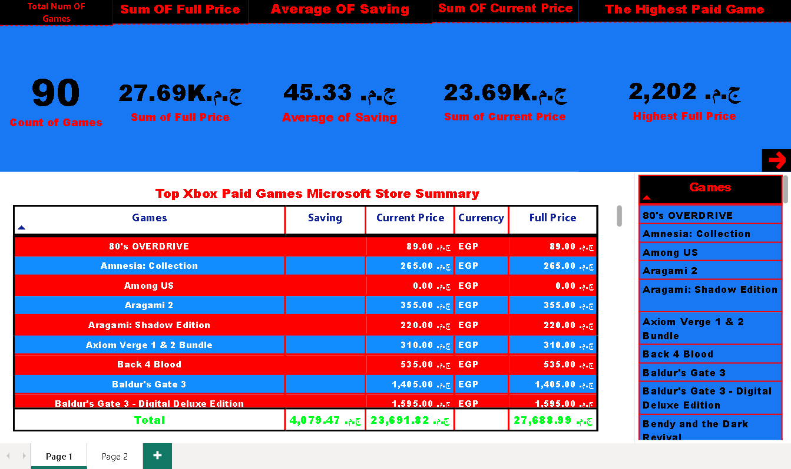
Forbes Top Billionaires Analysis Project
This project aims to analyze the Forbes list of the world's top billionaires,
focusing on identifying key trends, patterns, and insights related to the financial status,
industry distributions, geographic locations, and other demographic data of the wealthiest individuals globally.
This analysis will help in understanding the dynamics of wealth accumulation,
the impact of economic and geopolitical factors on billionaires, and the sectors driving the highest wealth.

Bicycle Sales Excel Project
The Bicycle Sales Project aims to analyze and enhance the sales performance of a bicycle retail business using Microsoft Excel.This project will specifically focus on the impact of Region,Marital Status, and Education level on bicycle sales.

Coffee Sales Excel Project
The Coffee Sales Excel Project aims to create a detailed and interactive Excel workbook to manage and analyze coffee sales data effectively. This project will facilitate tracking total sales, visualizing sales by country, and identifying top customers.


Twitter X Bot Project
The Twitter Post Bot is an automated tool designed to schedule and publish tweets on Twitter. Built using Python and the Twitter API, this bot enables users to pre-plan their tweet content, specify posting times, and engage with their audience consistently.

Instagram Follower Growth Project
The Instagram Follower Growth Project aims to increase the number of followers for a specific Instagram account through strategic planning, content optimization, and engagement strategies. The project will involve analyzing the target audience, identifying key demographics, creating engaging content, and implementing growth tactics to attract and retain followers.

LinkedIn Job Application Automation
The LinkedIn Job Application Automation project aims to streamline the job application process by automating the repetitive tasks involved in searching for and applying to job postings on the LinkedIn platform. By leveraging web scraping techniques and automation scripts, the project will enable users to quickly and efficiently apply to multiple job listings without the need for manual intervention.

Real Estate Web Scraping Project
A real estate web scraping project involves extracting data from real estate websites to gather information about properties, including prices, locations, features, and other relevant details. This data can be used for various purposes such as market analysis, property valuation, investment decision-making, or building a real estate listing database.
Tinder Like Bot Project
The Tinder Like Bot project is aimed at creating a program that automates interactions on the Tinder platform, using human behavior to browse profiles. The bot will utilize web automation techniques to Like People.

Carrefour Web Scraping With Python
In this project, we will develop a Python script to scrape product data from Carrefour's website.
Carrefour is a popular retail chain with an extensive range of products,
making it an excellent source for various types of data such as product names, prices, descriptions, and ratings.
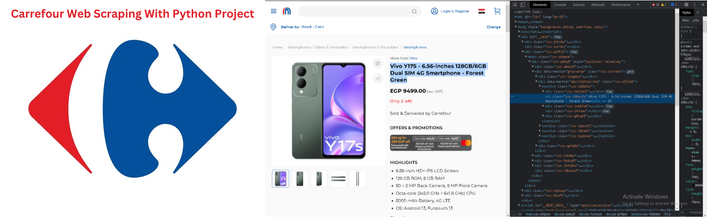
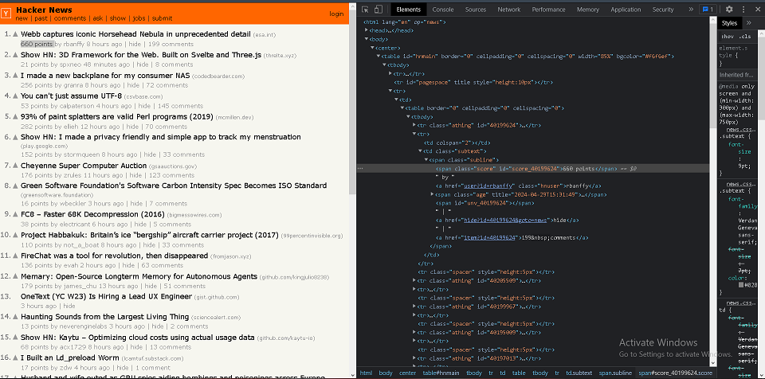
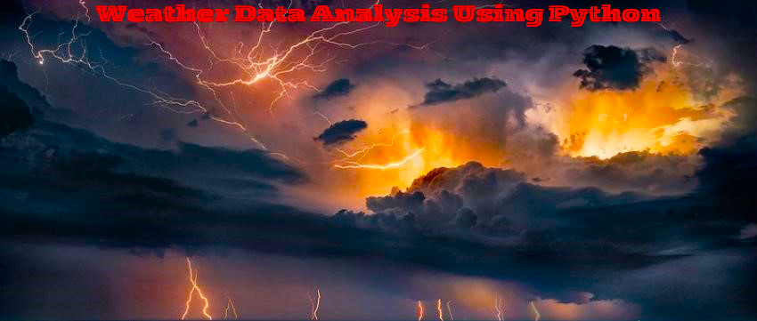

 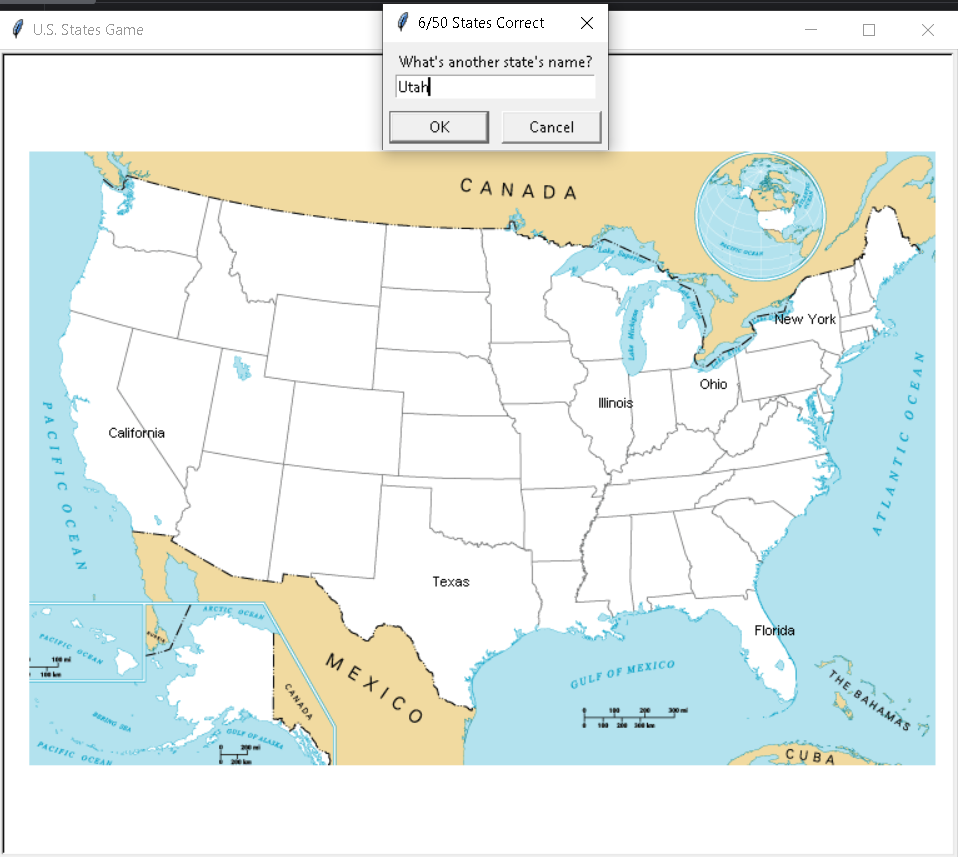
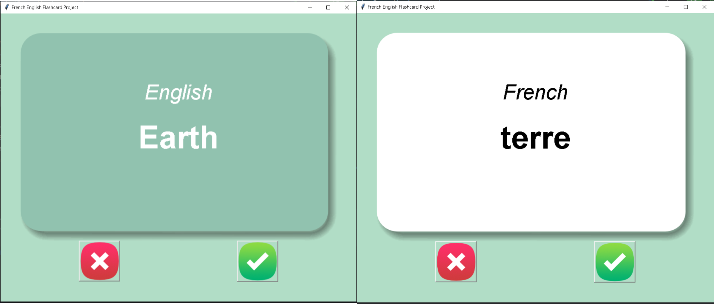
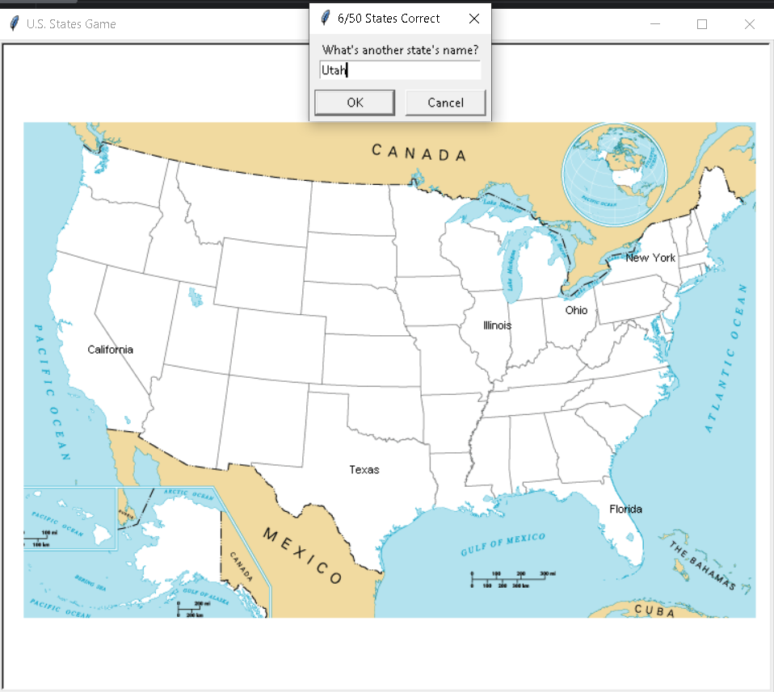
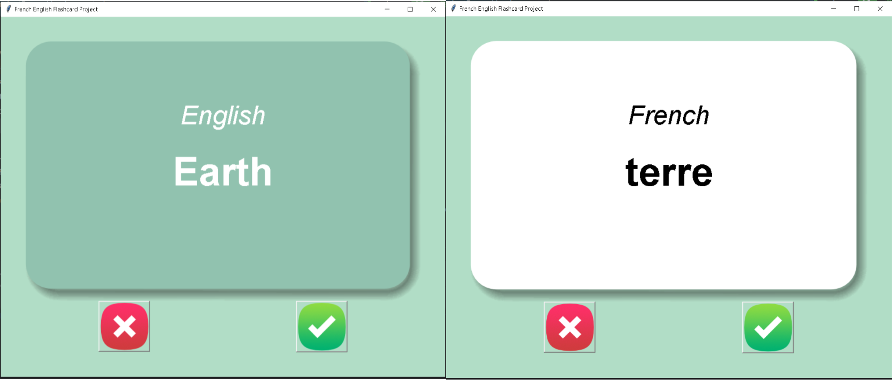
Digital Image Restoration Using Regularization Filter
The objective of the project is to learn how the restoration process is done
by building different techniques or filters as well as other techniques being
used and how it works, to restore degraded images to help us improve the
quality of the image. The basic approach of this project is to get the highest
resulting technique compared among the rest of the techniques used to
4
determine the best performance to fulfil the needs of the desktop
application we’re creating.